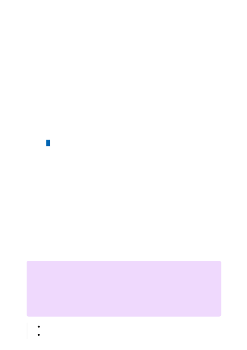

To secure your Cognitive Services resource, you should first configure a rule to deny
access to traffic from all networks (including internet traffic) by default. Then, you should
configure rules that grant access to traffic from specific VNets. This configuration
enables you to build a secure network boundary for your applications. You can also
configure rules to grant access to traffic from select public internet IP address ranges,
enabling connections from specific internet or on-premises clients.
Network rules are enforced on all network protocols to Azure Cognitive Services,
including REST and WebSocket. To access data using tools such as the Azure test
consoles, explicit network rules must be configured. You can apply network rules to
existing Cognitive Services resources, or when you create new Cognitive Services
resources. Once network rules are applied, they're enforced for all requests.
Virtual networks (VNETs) are supported in regions where Cognitive Services are
available . Cognitive Services supports service tags for network rules configuration. The
services listed below are included in the CognitiveServicesManagement service tag.
AzureActiveDirectory
AzureFrontDoor.Frontend
Supported regions and service offerings
Anomaly Detector
＂
Azure OpenAI
＂
Computer Vision
＂
Content Moderator
＂
Custom Vision
＂
Face
＂
Language Understanding (LUIS)
＂
Personalizer
＂
Speech service
＂
Language service
＂
QnA Maker
＂
Translator Text
＂
７
Note
If you're using, Azure OpenAI, LUIS, Speech Services, or Language services, the
CognitiveServicesManagement tag only enables you use the service using the SDK
or REST API. To access and use Azure OpenAI Studio, LUIS portal , Speech Studio or
Language Studio from a virtual network, you will need to use the following tags: